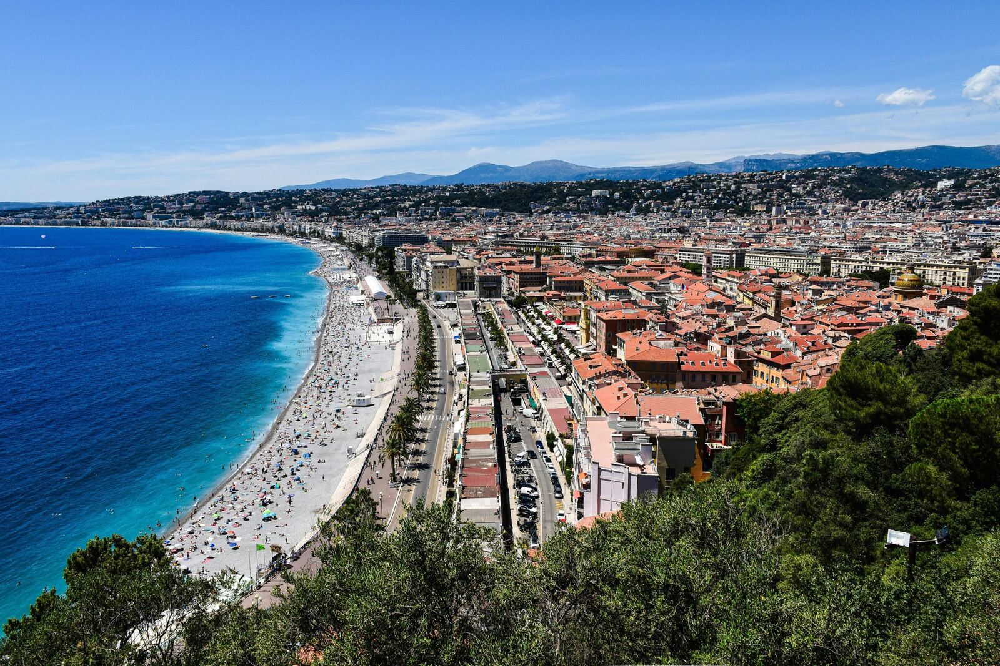
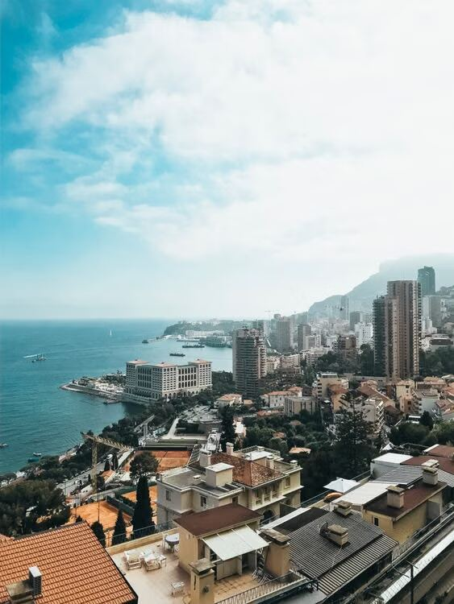

Zone d’intervention
Géomètre-expert à Nice, sur la Côte d’Azur et à Monaco
Un cabinet local, qui connaît les pentes, les restanques et les règles d’urbanisme de la Riviera.
GE Metric · 142 avenue de la Clua, 06100 Nice
Où intervenons-nous ?
- Nice06
- Saint-Laurent-du-Var06
- Cagnes-sur-Mer06
- Villefranche-sur-Mer06
- Saint-Jean-Cap-Ferrat06
- Beaulieu-sur-Mer06
- Èze06
- Cap-d’Ail06
- Beausoleil06
- La Turbie06
- Roquebrune-Cap-Martin06
- Menton06
- Saint-André-de-la-Roche06
- La Trinité06
- Saint-Martin-du-Var06
- Carros06
- Vence06
- Saint-Paul-de-Vence06
- Antibes06
- MonacoMC
Liste non exhaustive.
Du port de Nice à Monaco


Nos missions à Nice et sur la Côte d’Azur
FoncierBornage de terrainFoncierDivision parcellaireFoncierServitudes et droit de passageTopographie / ImplantationPlan topographiqueTopographie / ImplantationImplantation et suivi de chantierCopropriété / VolumétrieEDD et règlement de copropriétéCopropriété / VolumétrieDivision en volumesRelevé d’architecte / Acquisition 3DRelevé d’architecteRelevé d’architecte / Acquisition 3DScan 3D et nuage de points
Questions fréquentes
Quel PLU s’applique à Nice ?
Le PLU métropolitain de la Métropole Nice Côte d’Azur. D’autres communes de la zone ont leur propre document : nous vérifions celui de votre parcelle.
Le déplacement est-il facturé ?
Le devis tient compte de la localisation de la mission, notamment du temps de trajet depuis le bureau.
Un projet sur la Côte d’Azur ?
Indiquez l’adresse du bien : nous vous rappelons.